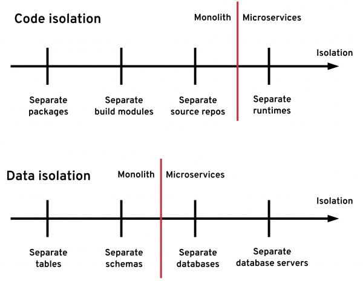
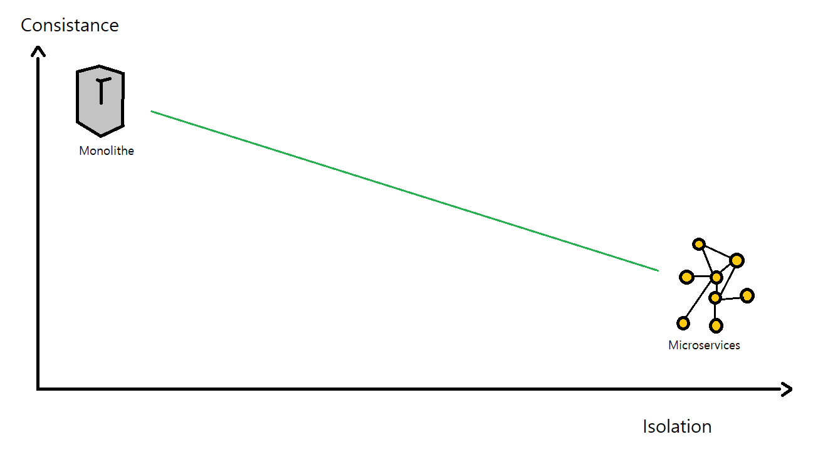
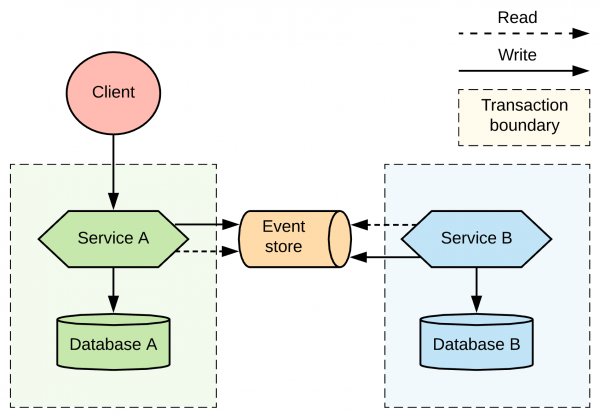

Les petites application « React »

Des applications souvant plus complexes

Les bénéfices de la simplicité
- conforme à notre formation et nos compétences
- plus simple à bien des égards
- moins couteux à court terme
Oui mais, ...
- maintenance complexe
- obsolescence inévitable
- coûteux à long terme
principe
Un plus grand niveau d'isolation
L'enjeu majeur de la cohérence transactionnelle
L'enjeu majeur de la cohérence transactionnelle
Intérêt et limites du microservices
isolation vs consistence